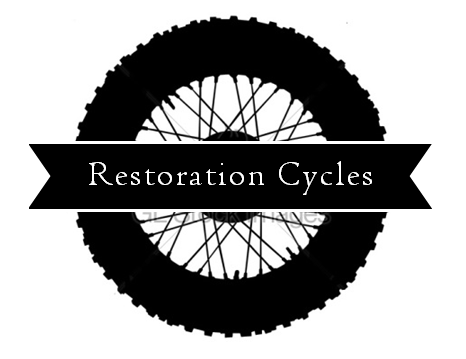

Home
About
Builds
Contact
Blog
Resources
Cleaning the fuel tank
December 12, 2015
The fuel tank was in pretty good shape on the outside, but the inside was rusty and full of sludge. I bought several gallons of vinegar and got to work cleaning it out.
First run
November 21, 2015
After two weeks of learning how carbs work, breathing more carb cleaner than I care to think about I git it all put back together. I mounted the carbs, hit the starter and...it worked! The bike turned over for a bit then fired up. It sounded really good!
Rebuilding carburetors
November 11, 2015
Figuring out how to build carbs. Thankfully I found this awesome carb rebuild book that walked me though the rebuild process. There's a link to it on the resources page.
Starting a new build
November 7, 2015
Starting my first motorcycle build. I found a 1980 Honda CB750 on Craigslist that wasn't running but just needed a carb rebuild. I went and looked at it and it seemed to be in good shape overall. It had a new battery, new back tire, and even came with a windjammer fairing that was terribly ugly! These are just a few before pictures.